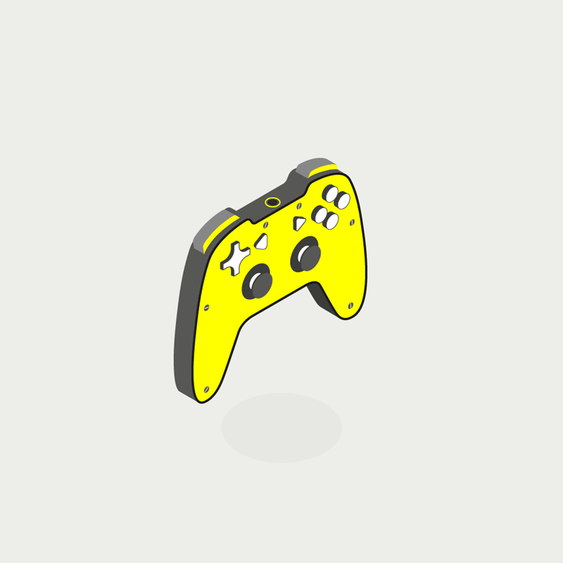
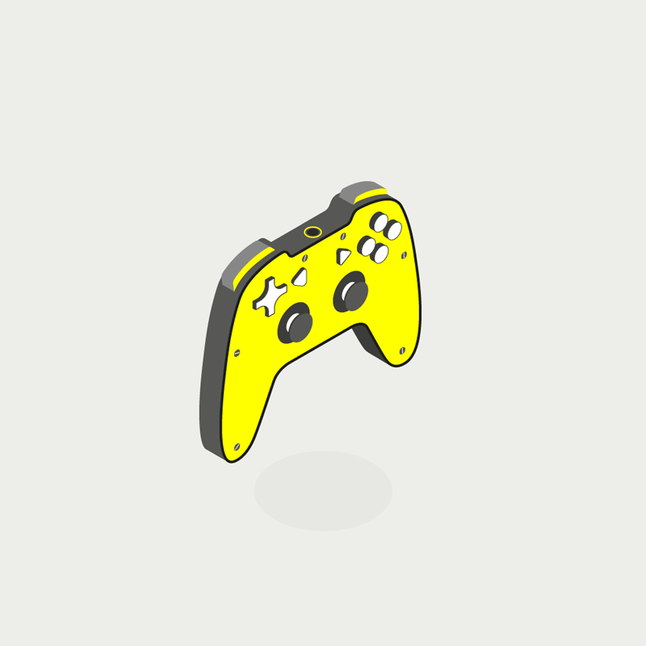

Personal Favourites and Xbox History
This page is focused on my own personal favourites and the history of xbox trough a YouTube video

 

My personal favourite games include:
Rainbow Six Siege
- A tactical FPS that uses a destructive environment and operators with various gadgets.
Skyrim
- A medieval role-playing game with many ways to use skills and create different play styles.
Warframe
- A free game on all platforms, playable to the end without spending any money. Its a looter shooter kind of game.
Watch the history of how xbox started here
I hope you enjoyed the xbox community website i have created. Good luck and game on.

Go to top of page